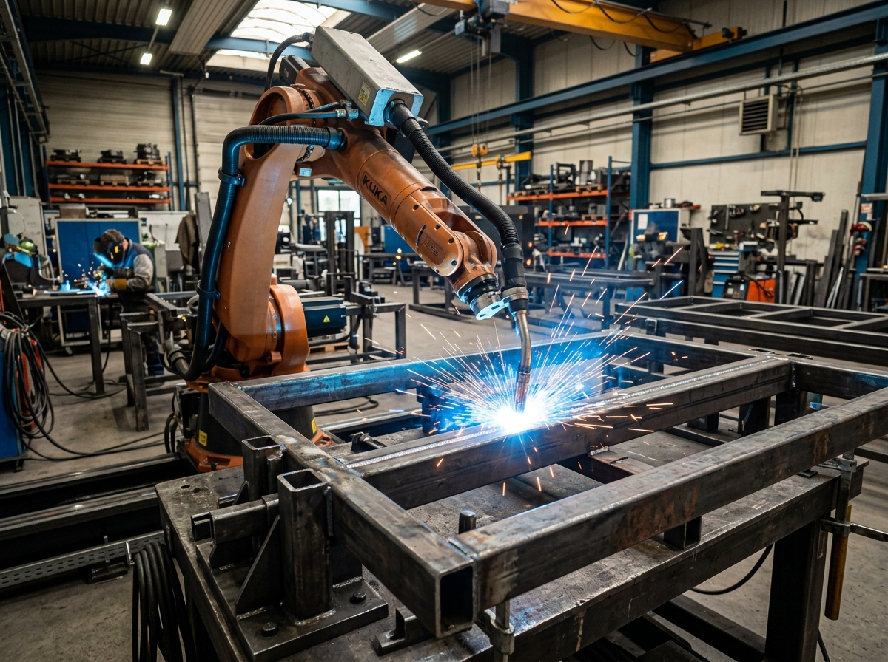
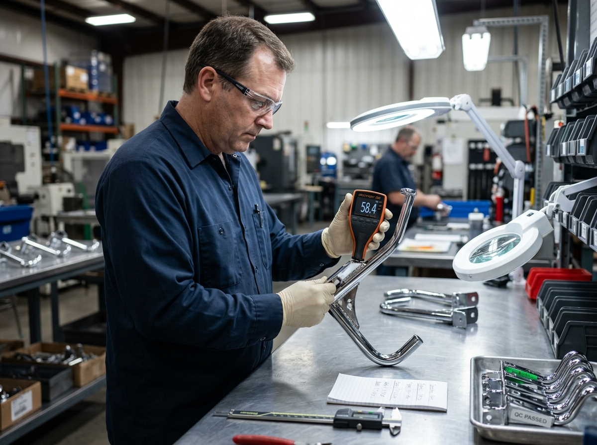

龐大起訂量（High MOQ）陷阱
傳統代工大廠動輒要求單一規格 200~500 套起訂才願意開模。對於展店 5 間或測試快閃專櫃的品牌，將造成巨大的庫存資金積壓與沉沒成本。
B2B SOURCING WHITE PAPER
國際零售品牌、展店企劃主管與視覺陳列師（VM），如何藉由台灣高精密陳列設備工程，跳脫龐大起訂量枷鎖、關稅波動與品質不穩定的結構性痛點。
現代實體零售已不再是單一複製 500 間同質門市，而是講求概念旗艦店、季節性快閃與專賣店微型展店。然而，採購團隊在面對傳統超大批量代工廠時，常面臨無法妥協的困局：
傳統代工大廠動輒要求單一規格 200~500 套起訂才願意開模。對於展店 5 間或測試快閃專櫃的品牌，將造成巨大的庫存資金積壓與沉沒成本。
如美國對中國製造金屬件加徵的 301 條款高額關稅，抹平了傳統低價優勢，導致最終抵港到店成本難以掌控。
品牌獨家開發的展示結構與專利卡扣，若在缺乏透明度的製造環境下代工，面臨外洩或焊道粗糙、表面漆膜附著力不良的品質隱憂。

在 Big Fame，您的專案直接由具備數十年經驗的陳列工程師對接。我們審核圖面可製造性、計算管壁厚度與力矩平衡，在下料前杜絕所有結構隱患。

在投入量產前，先以 1 套真實樣品驗證承重、層架卡扣順暢度與商品手感。我們在廠內預組裝並提供 360 度動態影像檢視，經您確認無誤後才啟動量產。
透過階段性里程碑，將展店初期的資產風險降至最低。
數量： 1 至 2 套
重點： 結構受力驗證、公差微調、烤漆色板對色、實際商品陳列測試。
數量： 10 至 50 套
重點： 旗艦門市開幕、百貨快閃專櫃、區域重點測試市場快速鋪點。
數量： 100+ 套
重點： 模組化零件標準化量產、規模階梯折讓、棧板平整化外銷 KD 裝箱直達現場。
台灣擁有精密金屬加工聚落、嚴密的智慧財產權（IP）保護、高透明度雙語工程溝通，並能免除高額關稅風險（如美國對中國金屬件之 301 條款關稅），更重要是極具意願配合 1:1 敏捷實體打樣與 10~50 套少量訂製。
在雙方確認可製造性設計（DFM）工程圖面後，1:1 實體功能打樣通常在 7 至 14 個工作天內在台灣廠內組裝完成，並提供全視角高解析影音供驗收。
可以。我們深耕國際貿易與出口外銷數十年，提供完整出口報關、ISPM 15 熱處理木箱 KD 平整包裝、提單文件管理，支援 FOB、CIF 或 DDP 門到門直送指定海內外門市。
支援 1 套實體打樣、10~50 套快閃小量。24 小時內工程師回覆工藝評估與試作規劃。
專為海外採購與連鎖展店設計。包含外銷 KD 包裝材積換算、材料檢驗證明與供應鏈銜接時程表。